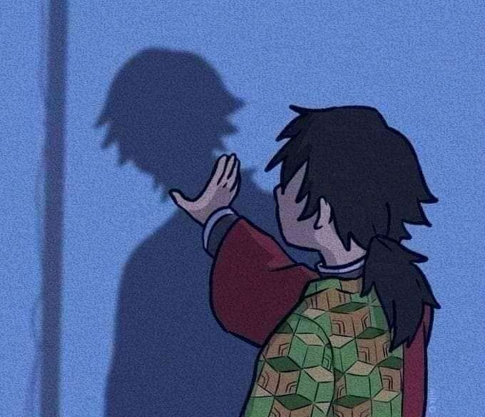

Trabalhando com imagens

Demonslayer é um anime de ação e aventura, baseado no mangá de Koyoharu Gotouge. A história segue Tanjiro Kamado, um jovem que se torna um caçador de demônios após sua família ser massacrada por essas criaturas.